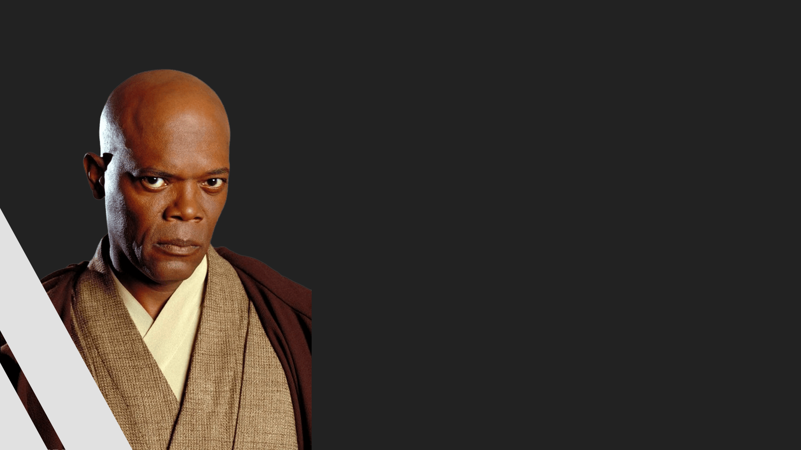
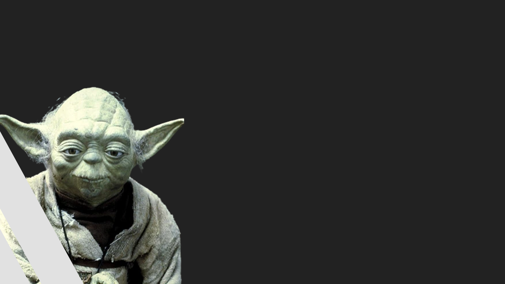
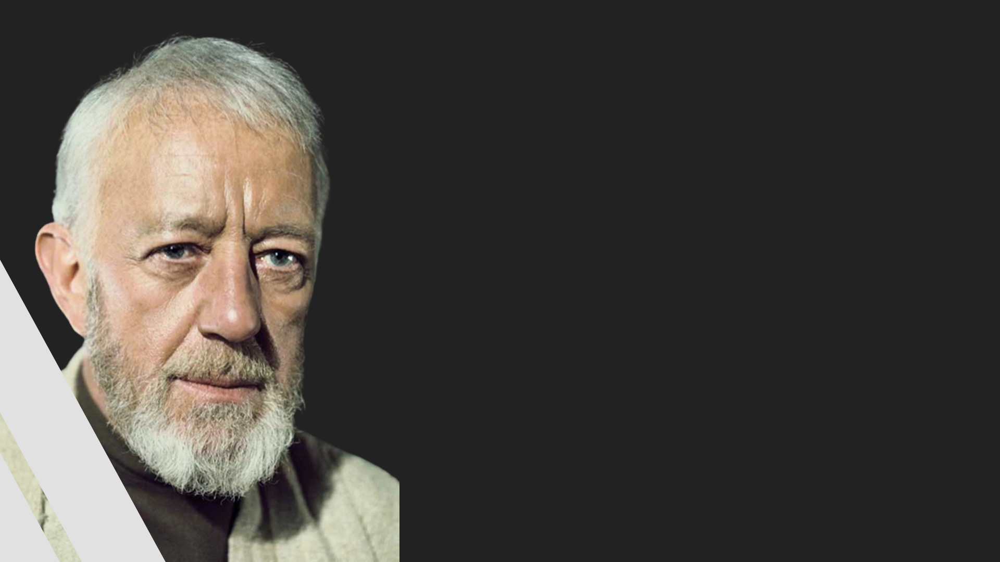
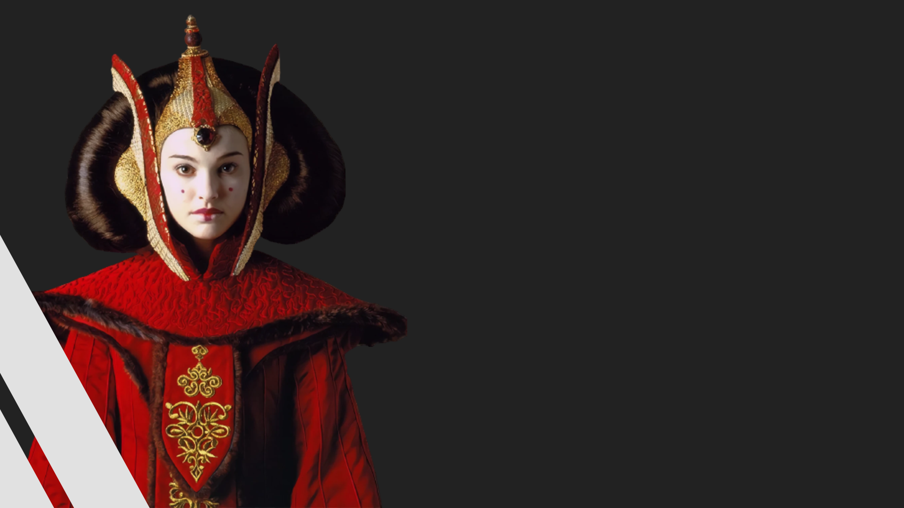

A República Galáctica, foi uma união democrática que governava a galáxia por mil anos antes da ascensão do Império Galáctico. A República foi ajudada pelos esforços da Ordem Jedi, que permaneceram como os guardiões da paz e da justiça, que permite à República de ser livre de conflito em grande escala por mais de mil anos. No entanto, trinta e dois anos antes da Batalha de Yavin, a República Galáctica sofreu sua primeira grande crise em milênios durante a Invasão de Naboo, que levou-a para as Guerras Clônicas dez anos depois.
Principais integrantes
Sheev Palpatine
Sheev Palpatine, antes de se tornar o Imperador, Palpatine é um político habilidoso e manipulador que se torna o Chanceler Supremo da República Galáctica. Ele desempenha um papel crucial na trama ao manipular eventos para ganhar poder e estabelecer o Império Galáctico..

Mace Windu
Um dos principais Mestres Jedi do Conselho Jedi. Ele é um guerreiro habilidoso e um defensor ferrenho da justiça. Windu desempenha um papel importante na luta contra os Sith durante a Trilogia Prequela.

Mestre Yoda
O lendário Mestre Jedi, Yoda, é um dos membros mais antigos e sábios do Conselho Jedi. Ele é conhecido por sua sabedoria, conexão profunda com a Força e sua habilidade como um dos melhores duelistas Jedi..

Obi-Wan Kenobi
Inicialmente um Padawan de Qui-Gon Jinn, Obi-Wan Kenobi se torna um Cavaleiro Jedi e, mais tarde, Mestre Jedi. Ele é um personagem central nas Trilogias Prequela e Original, desempenhando um papel fundamental na formação de Anakin Skywalker e na luta contra os Sith.

Padmé Amidala
A Rainha e, mais tarde, Senadora de Naboo, Padmé é uma figura política influente na República Galáctica. Ela é uma defensora da paz e da justiça e desempenha um papel crucial nos eventos políticos durante a Trilogia Prequela.
onde a aliança apareceu na saga?
The High Republic: Into the Dark
"Starlight: Parte One - Go Together"—Star Wars Insider 199
The High Republic: Luz dos Jedi
The High Republic Adventures Free Comic Book Day 2021
"Tales of Villainy: The Gaze Electric"—Star Wars Adventures 6 (apenas menção)
The High Republic Adventures 1
The High Republic Adventures 2
The High Republic: A Test of Courage
The High Republic: The Great Jedi Rescue
The High Republic 1
"Starlight: Go Together: Parte Two"—Star Wars Insider 200